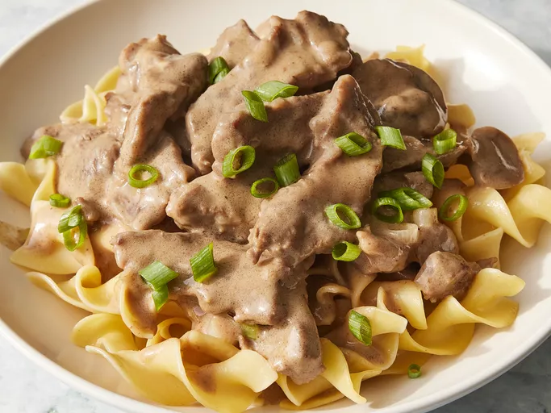

Beef Stroganoff
Link to the original recipe

Description
A classic Russian beef dish, best served with pasta or mashed potatoes.
Ingerdients
- 2 pounds beef chuck roast
- ½ teaspoon salt
- ½ teaspoon ground black pepper
- 4 ounces butter
- 4 green onions, sliced (white parts only)
- 4 tablespoons all-purpose flour
- 1 (10.5 ounce) can condensed beef broth
- 1 teaspoon prepared mustard
- 1 (6 ounce) can sliced mushrooms, drained
- ⅓ cup sour cream
- ⅓ cup white wine
- salt and ground black pepper to taste
Steps
- Remove any fat and gristle from chuck roast; cut into strips ½-inch thick by 2-inches long. Season with ½ teaspoon salt and ½ teaspoon pepper.
- Melt butter in a large skillet over medium heat. Add beef and brown quickly.
- Push beef to one side of the skillet. Add onions; cook and stir for 3 to 5 minutes, then push to the side with beef.
- Stir flour into juices on the empty side of the pan. Pour in beef broth and bring to a boil, stirring constantly. Lower the heat and stir in mustard. Cover and simmer for 1 hour or until the beef is tender.
- Five minutes before serving, stir in mushrooms, sour cream, and white wine. Cook until heated through; season with salt and pepper.
Home